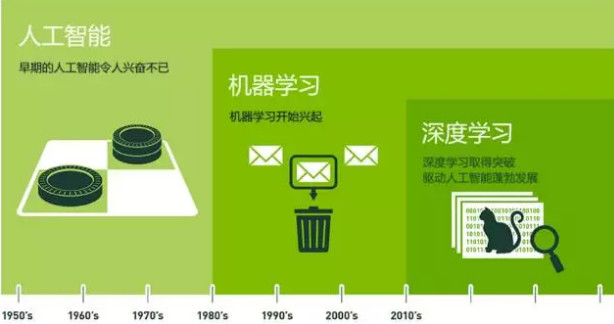
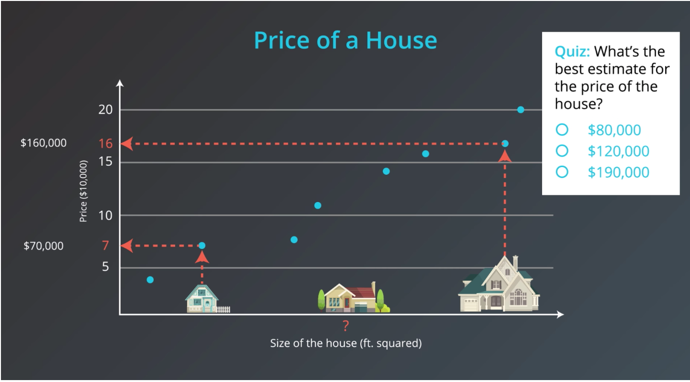
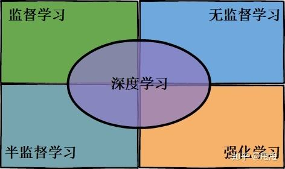
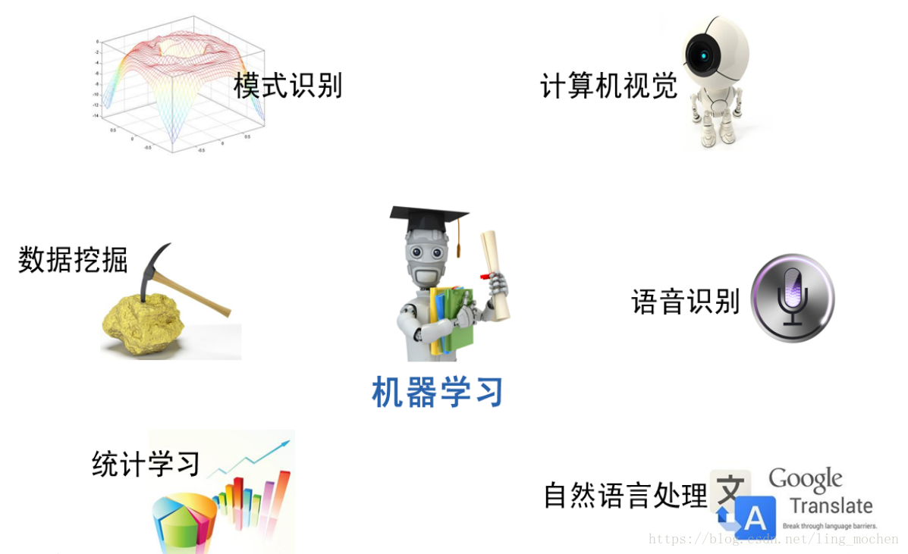
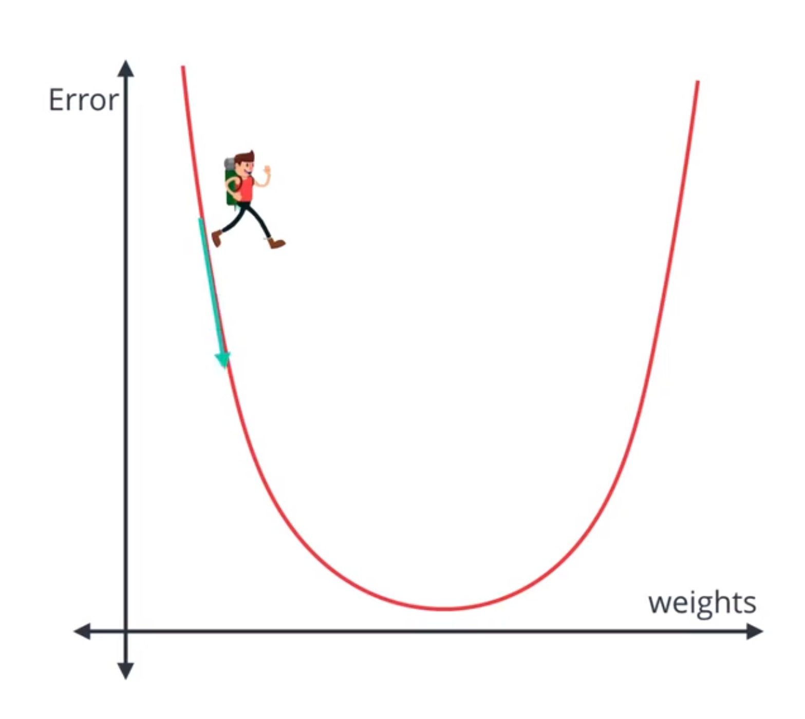
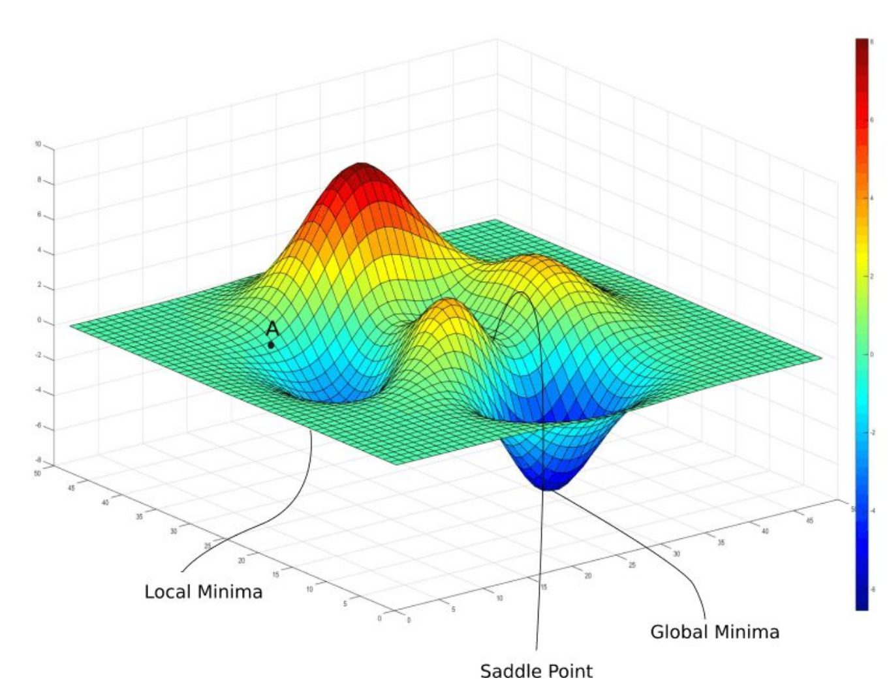
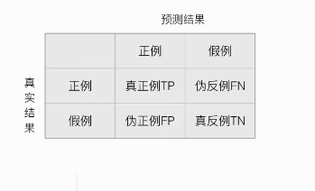
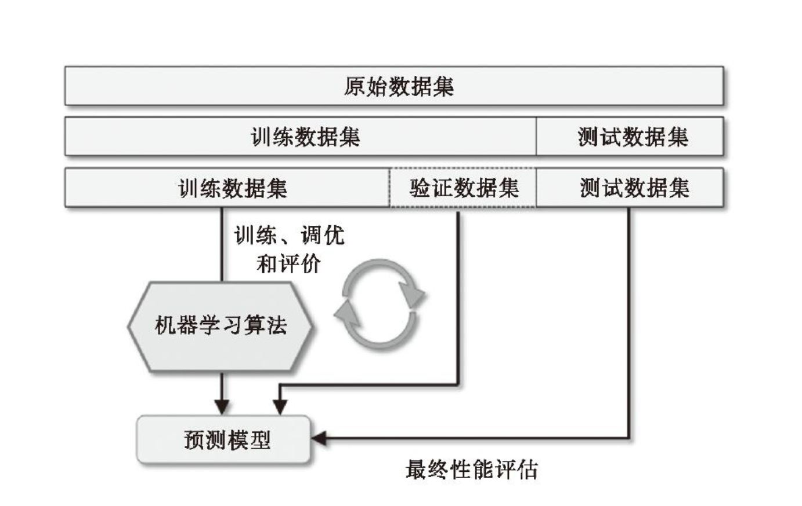

一、人工智能
什么是人工智能
人工智能（Artificial Intelligence），英文缩写为AI。它是研究、开发用于模拟、延伸和扩展人的智能的理论、方法、技术及应用系统的一门新的技术科学。
人工智能是计算机科学的一个分支，它企图了解智能的实质，并生产出一种新的能以人类智能相似的方式做出反应的智能机器，该领域的研究包括机器人、语言识别、图像识别、自然语言处理和专家系统等。强人工智能和弱人工智能
早在1956年夏天那次会议，人工智能的先驱们就梦想着用当时刚刚出现的计算机来构造复杂的、拥有与人类智慧同样本质特性的机器。这就是我们现在所说的“强人工智能”（General AI）。这个无所不能的机器，它有着我们所有的感知（甚至比人更多），我们所有的理性，可以像我们一样思考。
人们在电影里也总是看到这样的机器：友好的，像星球大战中的C-3PO；邪恶的，如终结者。强人工智能现在还只存在于电影和科幻小说中，原因不难理解，我们还没法实现它们，至少目前还不行。
我们目前能实现的，一般被称为“弱人工智能”（Narrow AI）。弱人工智能是能够与人一样，甚至比人更好地执行特定任务的技术。例如，图像分类；或者人脸识别。人工智能，机器学习和深度学习的关系

机器学习是人工智能的一种实现方式，也是最重要的实现方式。目前机器学习的方法被大量的应用解决人工智能的问题。
深度学习是机器学习现在比较火的一个方向，其本身是神经网络算法的衍生，在图像、语音等富媒体的分类和识别上取得了非常好的效果。
总的来说，深度学习是机器学习的一个子集，机器学习是人工智能的一个子集。
二、机器学习
机器学习的概念
什么是机器学习
机器学习就是机器像人类一样学习，人能从过去的经验中学习，对于机器来说过去的经验就是记录的数据。机器理解大量的数据然后归纳出模型来对数据进行预测和分析。

机器学习的对象
机器学习的对象是数据(data), 它从数据出发，提取数据的特征，抽取数据的模型，发现数据的知识，又回到对数据的分析与预测中去。
作为机器学习的对象，数据包括各种数字、文字、图像、音频、视频数据以及它们的组合。
机器学习的目的
机器学习用于对数据进行预测和分析，特别是对未知新数据进行预测和分析。对数据的预测可以让计算机更加智能化；对数据的分析可以让人们获取新的知识。
对数据的预测和分析是通过构建模型实现的。机器学习总的目标就是考虑学习什么样的模型和如何学习模型，已使模型对数据进行准确的预测和分析，同时也要尽可能地提升学习的效率。
机器学习的分类
机器学习由监督学习、非监督学习、半监督学习和强化学习等组成。

监督学习，非监督学习，半监督学习的区别是训练数据是否有标记。
机器学习的应用场景

机器学习三要素
机器学习的方法由模型，策略，算法构成。
模型
假设数据是独立同分布产生的；并且假设要学习的模型属于某个函数的集合，这个函数的集合就称为假设空间。
模型就是所要学习的条件概率分布或决策函数。模型的假设空间包含所有可能的概率分布或决策函数。
例如：线性回归算法，它的模型就是一个线性函数，即
$$
f(x) = w_1x_1 + w_2x_2 + … + w_nx_n + b
$$
一般用向量形式写成 $f(x) = w^Tx +b$, 其中$w = (w_1, w_2, …, w_3)$.$w$和$d$确定之后，模型就确定了。
根据$w$和$b$的所有取值所组成的集合就是线性回归算法的假设空间。
策略
应用某个评估指标, 从假设空间中选择一个最优的模型。
对于给定的输入$X$, 模型$f(X)$给出相应的输出$Y$, 这个输出的预测值$f(X)$与真实值$Y$可能一致也可能不一致，用一个损失函数(loss function)或代价函数(cost function)来度量预测错误的程度。记作$L(Y, f(X))$
机器学习中常用的损失函数有以下几种:
(1) 0-1损失函数(0-1 loss function)
$$
L(Y,f(X)) =
\begin{cases}
0, & \text{Y = f(X)} \
1, & \text{Y $\neq$ f(X)}
\end{cases}
$$(2) 平方损失函数(quadratic loss function)
$$
L(Y, f(X)) = (Y - f(X))^2
$$
(3) 绝对损失函数
$$
L(Y, f(X)) = |Y - f(X)|
$$
(4) Huber损失—-平滑绝对误差
$$
L_\delta(Y,f(X)) =
\begin{cases}
{\frac 12}(y-f(x))^2, & for|y-f(x)|\le \delta \
\delta|y-f(x)| - {\frac 12}{\delta}^2, & \text{otherwise}
\end{cases}
$$(5) 对数损失函数(logarithmic loss function)
$$
L(Y, P(Y|X)) = -logP(Y|X)
$$
损失函数值越小，模型就越好。损失函数值最小的模型就是最优模型。
举例: 线性回归, $$f(x) = w_1x_1 + w_2x_2 + … + w_nx_n + b$$ , 均方误差为
$$
E(w, b) = {\frac 1n}\sum_{i=1}^n (f(x_i) - Y)^2
$$
均方误差的几何意义就是欧几里得距离。


算法
算法是指学习模型的具体计算方法。
机器学习常用优化算法:
(1) 梯度下降
随机梯度下降(
Stochastic Gradient Descent, SGD) 批量梯度下降(
Batch Gradient Descent, BGD) 小批量梯度下降(
Mini-batch Gradient Descent, MBGD)(2) 梯度下降的变体
Momentum、Adagrad、Adadelta、RMSprop、Adam(3) 牛顿法和拟牛顿法
举例：线性回归的优化算法可以使用梯度下降或最小二乘法
在线性回归中，最小二乘法就是试图找到一条直线，使所有样本到直线的欧式距离之后最小
求解$w$和$b$使$E(w, b) = \sum_{i=1}^n(y_i - wx_i -b)$最小化，可以将$E(w, b)$分别对$w$和$b$求导，等于0，可以得到$w$和$b$的值。
机器学习的训练步骤
1. 明确问题和目标
需要解决什么问题，达到什么目标
2.确定输入，收集数据
通过多种途径得到一个有限的训练数据的集合
亚马逊数据集
UCI机器学习库
微软数据集
计算机视觉数据集
ImageNet
MS COCO
3.确定输出，选择算法
根据输入输出数据的类型决定使用的算法类型，分类还是回归？
输入变量与输出变量均为连续变量的预测问题称为回归问题；
输出变量为有限个离散变量的预测问题称为分类问题；
在对应的算法类型中选择一个或多个算法。
4.特征工程
数据预处理
- 缺失数据—> 删除 和 填充 (平均数，众数)
- 处理特征数据—> 正规化 (归一化，正则化，白化)
- 处理类别数据—>独热编码
- 数据集划分—>训练、验证、测试
数据降维
特征选择
- 使用L1正则化进行数据稀疏化
- 序列特征选择算法 SBS
- 通过随机森林判定特征的重要性
特征提取 (将特征压缩到一个低维空间，而不是像特征选择那样完全剔除不相关的特征)
- PCA 主成分分析
- 线性判别
5. 建立模型
模型空间
损失函数
优化算法
评估标准
模型空间
确定了算法也就确定了模型空间，模型空间包含了算法的所有可能
损失函数
根据具体的算法和输出决定损坏函数
优化算法
选择优化算法
评估指标:

分类算法
- 准确率
- 精确率和召回率(查准率和查全率)
- ROC和AUC
- $F_1$和$F_{\beta}$
回归算法
平均绝对误差
均方误差
R2分数
6.确定最优模型
不断重复训练模型/评估模型/选择模型的步骤指导选择最优的模型
模型选择数据集划分:
训练集训练模型
验证集评估模型
测试集测试模型

使用k折交叉验证评估模型性能
- holdout方法
- k折交叉验证
通常情况下，我们将k折交叉验证用于模型的调优，也就是找到使得模型泛化性能最优的超参值。一旦找到了满意的超参值，我们就可
以在全部的训练数据上重新训练模型，并使用独立的测试数据集对模型性能做出最终评价。通过学习及验证曲线来调试算法
- 使用学习曲线判定偏差和方差问题
- 使用验证曲线判定过拟合与欠拟合
使用网格搜索调优机器学习模型
- 使用网格搜索调优超参数
- 通过嵌套交叉验证选择模型
- 网格搜索（grid search），它通过寻找最优的超参值的组合以进一步提高模型的性能。
7.应用实际问题
利用学习的最优模型对新数据进行预测或分析
三、参考
《统计学习方法》李航
《Python机器学习》[美] [塞巴斯蒂安·拉施卡]著 高明 徐莹 陶虎成译